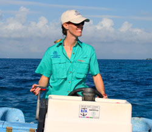
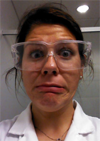
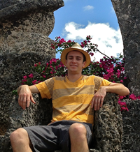
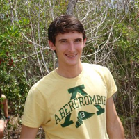
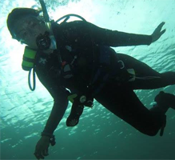
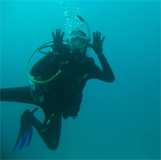
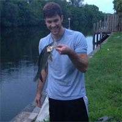
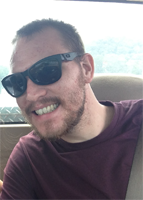

Evolutionary Ecology and Reproduction |
Evolutionary Ecology and Reproduction |
Principle Investigator
|  |
Nicole FogartyEducation1998 (Biology) B.A. Wittenberg University, Springfield, Ohio 2010 (Biology) Ph.D. Florida State University, Tallahassee, Florida Dissertation Title: Reproductive isolation and hybridization dynamics in threatened Caribbean acroporid corals 2010-2012 Postdoctoral Fellow, Smithsonian Marine Station, Fort Pierce, Florida Project Title: Chemical cues for reproduction and recruitment in Caribbean corals Area(s) of ResearchAlthough I grew up in Ohio, far from any ocean, I was driven to become a marine biologist since age 10. At 14 years old, I learned to SCUBA dive and saw my first coral reef; it was love at first sight. After graduating from Vandalia-Butler High School in 1994, I attended Wittenberg University in Springfield, Ohio. During my undergraduate career, I studied marine biology at the Bermuda Biological Station, the Bahamas Field Station in San Salvador, and at Duke University’s Beaufort Marine Laboratory. After graduating from Wittenberg in 1998, I moved to the Florida Keys where I had a variety of positions including: science instructor at Newfound Harbor Marine Institute at Seacamp, an outreach coordinator at The Nature Conservancy, and a scientific technician for Drs. Alina Szmant and Margaret Miller. After a temporary, contract appointment at NOAA’s Beaufort, North Carolina Laboratory in 2003, I began my PhD at Florida State University in Dr. Don Levitan’s lab. My dissertation focused on understanding how Caribbean acroporid hybrids are formed, and why they might be increasing in abundance. After receiving my PhD in 2010, I began a Marine Science Network Postdoctoral Fellowship at the Smithsonian Marine Station in Fort Pierce, Florida. Under the guidance of Drs. Val Paul and Nancy Knowlton, I examined the chemical cue involved in coral spawning synchrony. In July 2012, I was hired by Nova Southeastern University as an assistant professor. My current research interests are broadly related to coral reproduction, demography, hybridization, and speciation. |
Graduate Sudents
|  |
Ashley DunganAboutCurrently a second year Master’s student at Nova Oceanographic Center as a dual major in Marine Biology and Coastal Zone Management, I am starting my thesis research on the effects of ocean acidification on the microcalcification of juvenile and adult Porites astreoides coral. This research is being funded by Mote Protect Our Reefs Grant # and aims to quantify the consequences of ocean acidification on gross and fine scale calcification for multiple life stages of P. astreoides. I received my Bachelor’s degree in Biology, with an emphasis in Microbiology, from the State University of New York College at Brockport where I was the recipient of the college’s Presidential Scholarship and Merit Scholarship Award. During my undergraduate career, I made multiple research trips to the Gerace Research Station on San Salvador, Bahamas. My thesis research at SUNY Brockport, “Characterization of the Microbiota of San Salvador Island,” isolated and identified many components of the marine microbe content of the inland lakes and coastal ocean waters surrounding this island. My experiences with tropical marine ecosystems through the Gerace Research Station led me to my future at NSU. My research interests lie in the field of global change biology including ocean acidification, the marine carbonate system, and coral disease. I will be spending the summer of 2014 working with Dr. Emily Hall at the Mote Marine Ocean Acidification Lab in Sarasota, FL studying the effects of OA on multiple marine organisms to evaluate an overall ecosystem impact. |
|  |
Charlie GandiaArea(s) of ResearchI am currently a Master's student at the Nova Oceanographic Center. Before starting the Marine Biology program at Nova, I received my Bachelor's degree in Biology from the University of Central Florida where I worked as a lab technician studying sexual selection and immune response in Drosophila melanogaster fruit flies. I returned to South Florida, where I grew up with a great affinity for our adjacent reefs, and began an internship with the Mote Marine laboratory in the Florida Keys to work in the aquaculture of stony corals, coral reef restoration, and larval rearing. I continued my study of Caribbean corals at Mote Marine Laboratory in Sarasota where we examined the effects of ocean acidification and disease on Acropora cervicornis and A. palmata. My interests in evolution and the reproduction of corals led me to the Nova Oceanographic Center and the Fogarty Lab in January of 2014. My thesis research will focus on mesophotic and shallow populations of Orbicella spp. off the southern coast of St. Thomas, USVI. I will be investigating the viability of the Deep Reef Refugia Hypothesis, which proposes that deep-water, mesophotic coral communities remain buffered from many of the disturbances plaguing their shallow-water counterparts. By assessing the gametic compatibility between shallow and mesophotic Orbicella colonies as well as the settlement preferences and survivorship of their offspring, I wish to examine the potential contribution that mesophotic populations may have in shallow-water reef recovery. |
|  |
Hunter NorenArea(s) of ResearchFirst a little bit about me; growing up I lived in the US, Sweden and Germany. I got hooked on diving when I was 12 in Sweden and since then I have been diving in Egypt, Cyprus, Malta, Spain, and the Fjords of Norway in the Arctic Circle. I enjoy wreck diving and underwater photography. I am currently working on my Masters in Marine Biology at Nova Southeastern’s Oceanographic Center. Prior to attending Nova, I received my bachelors in Marine Biology from Rollins College in Orlando. As an undergrad I researched possible animal vectors that could harbor the Serratia marcescens pathogen responsible for the transmission of white pox disease that affects the threatened Acropora palmata (Elkhorn Coral). I am currently working as a student researcher on a large collaborative project that is examining genotypic and Symbiodinium diversity in two species of coral (Orbicella annularis and Orbicella franksi) along the Florida reef tract from Broward County down to the Dry Tortugas. My thesis explores mesophotic reefs on the barrier reef of Belize. Mesophotic reefs are coral reef communities that inhabit greater depths than their shallow water counterparts, they are chronically understudied due to their depth. I am investigating the plausibility of the Deep Reef Refugia Hypothesis (DRRH), which states that these deep reefs are a refuge for corals that are threatened by increasingly hostile conditions closer to the surface (temperature, wave action, proximity to human settlement). By examining gamete preference, compatibility, and genetic relatedness between shallow and deep individuals, as well as larval settlement preferences, I hope to expand our knowledge of reef connectivity and reproduction. |
|  |
Kellie PelikanArea(s) of ResearchI am a grad student in the Fogarty lab at the Oceanographic Center of Nova Southeastern University in South Florida. I received my Bachelor’s degree from Old Dominion University (Norfolk, VA) with a concentration in Marine Biology. I have volunteered and worked with the Chesapeake Bay foundation on coastal restoration. I have also interned with the Virginia Aquarium working with quarantine animals, both marine and terrestrial. My interests lie in reproductive ecology. As an undergrad, I studied general morphology, reproductive success, and bioluminescence of Isistius brasiliensis. As a grad student, I am studying the effects of petroleum pollutants associated with bilge water on the reproduction and development of two sea urchin species, Tripneustes ventricosus and Lytechinus variegatus, through fertilization assays, viability experiments, and SEM to examine the integrity of the egg. |
|  |
Maggie RushmoreArea(s) of ResearchBefore beginning my Master’s degree at NOVA Southeastern University’s Oceanographic Center, I completed my Bachelor’s degree in Marine Science at Kutztown University of Pennsylvania. While there I worked as a teaching assistant in the comparative anatomy lab as well as completed an independent research project on the reproductive habits and success of various songbird species. Additionally I studied the distribution and aggregations of the whale shark (Rhincodon typus) during an internship at the Australian Institute of Marine Science in Perth, Western Australia. When I came to NOVA in January of 2013 I was unsure of what exactly I wanted to focus on. I entered the Fogarty lab and through taking Dr. Fogarty’s coral reef ecology class I was able to develop my thesis project. My project focuses on the effect that sedimentation has on various life stages in the brooding coral Porites astreoides. Oxidative analysis will be used to determine the amount of stress that occurs after exposing larvae, recruits, and adults to a range of sedimentation levels which mimic beach nourishment and dredging activities. I will also examine the amount of sediment that deters larvae from successfully settling. |
|  |
Josh StockerArea(s) of ResearchI am currently pursuing M.S. degrees in Marine Environmental Science and Coastal Zone Management at Nova Southeastern University’s Oceanographic Center. Despite having a natural affinity towards the marine environment throughout my childhood, I did not consider this as a career path until after obtaining B.S. degrees in Biology and Environmental Science at King’s College in Northeastern PA. This is where I developed an interest studying anthropogenic sources of pollution in natural environments by studying mercury contamination in crayfish along the Susquehanna River. After completing my undergraduate research, I was able to continue studying the effects of anthropogenic pollution in Dr. Nicole Fogarty’s coral fertilization and reproduction lab. In 2013, we were awarded a President’s Faculty Research and Development Grant to research the effects of exogenous steroidal hormones on coral reproduction and growth. This research will examine the potential impacts of birth control, hormone replacement therapies, and other sex steroids (which enter marine environments through sewage treatment plant outfalls and septic tanks) on invertebrate growth and reproduction. I am utilizing the NSU Oceanographic Center’s new SEACOR closed tank system to dose Porites astreoides and Acropora cervicornis fragments with 17β-estradiol and progesterone to determine any potential effects on growth and reproduction. In addition, I will also be dosing Porites spp. larvae in petri dishes to determine any potential impacts sex steroids have on larval settlement and survival. . |
|  |
Justin VossArea(s) of ResearchI am currently a third year master’s student working toward a double major in marine biology and coastal zone management at Nova Southeastern University Oceanographic Center. I grew up in Cincinnati, OH and received my Bachelors degree in biology from The Ohio State University. Before graduating, I studied marine resource management at the School for Field Studies in South Caicos, British West Indies. There, I discovered a passion for coral research, which would eventually lead me to NSU to study coral larvae and development. Many Caribbean reefs have experienced a regime shift from a coral to a macroalgae dominated state, and through my research I hope to identify the effect of a common macroalgae Laurencia spp. on Porites astreoides and Montastraea cavernosa coral larval behavior, recruitment, and post-settlement success. This macroalgae has been found to enhance settlement and metamorphosis in conch, lobster and sea hares. My preliminary data suggest that Laurencia may also induce settlement and metamorphosis in corals as well. Funding for my research project is provided by the American Museum of Natural History Lerner-Gray Fund for Marine Research. |